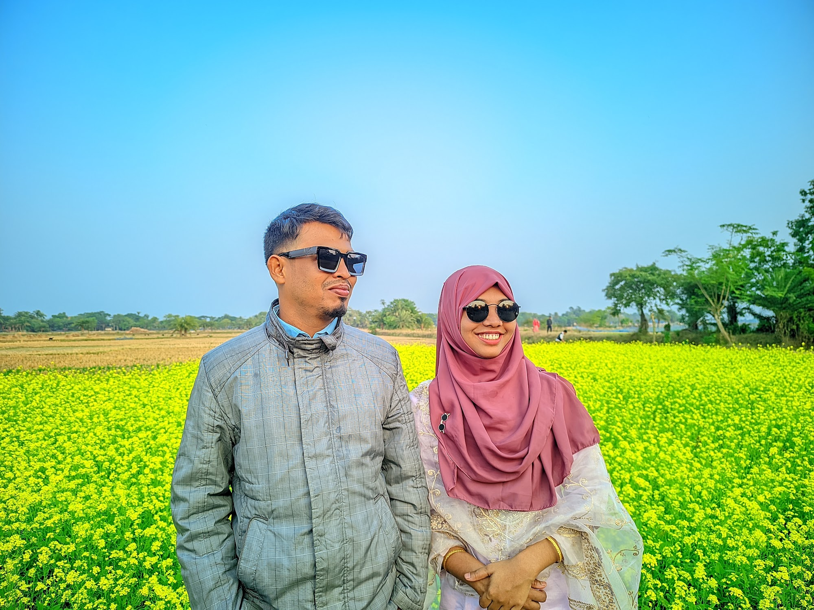

'দেশে ডেঙ্গু পরিস্থিতি মোকাবিলায় সর্বোচ্চ গুরুত্ব দিয়ে কাজ করছে সরকার। চলতি মৌসুমে ডেঙ্গুর প্রকোপ নিয়ন্ত্রণে রাখতে স্বাস্থ্যসেবা ব্যবস্থাকে প্রস্তুত রাখা, আক্রান্ত রোগীদের দ্রুত চিকিৎসার আওতায় আনা এবং মশার প্রজননস্থল ধ্বংস করার ওপর বিশেষ গুরুত্ব দেওয়া হচ্ছে। একই সঙ্গে সাধারণ মানুষকে সচেতন করার জন্য বিভিন্ন পর্যায়ে প্রচার-প্রচারণা চালানো হচ্ছে।
সংশ্লিষ্ট কর্তৃপক্ষের তথ্য অনুযায়ী, ডেঙ্গু নিয়ন্ত্রণে শুধু হাসপাতালে চিকিৎসা দেওয়ার ওপর নির্ভর না করে রোগের উৎস নিয়ন্ত্রণ করাও জরুরি। এ কারণে বিভিন্ন এলাকায় জমে থাকা পানি, নির্মাণাধীন ভবন, পরিত্যক্ত পাত্র, ড্রেন ও অন্যান্য স্থানে এডিস মশার সম্ভাব্য প্রজননস্থল চিহ্নিত করে ব্যবস্থা নেওয়ার ওপর জোর দেওয়া হচ্ছে।
বিশেষজ্ঞরা বলছেন, বর্ষা ও বৃষ্টিপাতের সময় বিভিন্ন স্থানে পানি জমে থাকায় এডিস মশার বংশবিস্তারের সুযোগ তৈরি হয়। তাই বাড়ির আশপাশে পানি জমতে না দেওয়া এবং নিয়মিত পরিষ্কার-পরিচ্ছন্নতা বজায় রাখা ডেঙ্গু প্রতিরোধে গুরুত্বপূর্ণ ভূমিকা রাখতে পারে। একই সঙ্গে জ্বর বা ডেঙ্গুর সম্ভাব্য উপসর্গ দেখা দিলে দেরি না করে চিকিৎসকের পরামর্শ নেওয়ার আহ্বান জানানো হচ্ছে।
সরকারি পর্যায়ে হাসপাতাল ও স্বাস্থ্যকেন্দ্রগুলোতে ডেঙ্গু রোগীদের চিকিৎসা নিশ্চিত করার পাশাপাশি প্রয়োজনীয় প্রস্তুতি রাখার ওপর গুরুত্ব দেওয়া হচ্ছে। স্বাস্থ্যকর্মীদেরও রোগী ব্যবস্থাপনা ও দ্রুত শনাক্তকরণের বিষয়ে সতর্ক থাকতে বলা হচ্ছে।
জনস্বাস্থ্য বিশেষজ্ঞদের মতে, ডেঙ্গু প্রতিরোধে সরকারি উদ্যোগের পাশাপাশি নাগরিকদের অংশগ্রহণ অত্যন্ত গুরুত্বপূর্ণ। একটি এলাকার বাসাবাড়ি, অফিস, শিক্ষাপ্রতিষ্ঠান কিংবা নির্মাণস্থলে পানি জমে থাকলে সেখানে মশার প্রজনন হতে পারে। ফলে নিয়মিতভাবে এসব স্থান পরিষ্কার করা এবং পানি জমার সুযোগ বন্ধ করা প্রয়োজন।
এদিকে নগর ও স্থানীয় পর্যায়ে মশক নিয়ন্ত্রণ কার্যক্রম আরও কার্যকর করার ওপরও গুরুত্ব দেওয়া হচ্ছে। শুধু কীটনাশক প্রয়োগের পরিবর্তে মশার প্রজননস্থল ধ্বংস, নিয়মিত পরিদর্শন এবং জনগণের অংশগ্রহণ নিশ্চিত করার মাধ্যমে দীর্ঘমেয়াদি নিয়ন্ত্রণ ব্যবস্থা গড়ে তোলার প্রয়োজনীয়তার কথা বলা হচ্ছে।
স্বাস্থ্যসংশ্লিষ্টদের মতে, ডেঙ্গু পরিস্থিতি নিয়ন্ত্রণে রাখতে হলে জনগণকে আতঙ্কিত না হয়ে সচেতন থাকতে হবে। জ্বর, মাথাব্যথা, শরীর ব্যথা বা অন্যান্য উপসর্গ দেখা দিলে নিজে থেকে ওষুধ না খেয়ে প্রয়োজন অনুযায়ী চিকিৎসকের পরামর্শ নেওয়া উচিত।
সরকারের পক্ষ থেকেও ডেঙ্গু প্রতিরোধে নাগরিকদের নিজ নিজ অবস্থান থেকে দায়িত্বশীল হওয়ার আহ্বান জানানো হয়েছে। বিশেষ করে বাড়ি, অফিস, দোকান, শিক্ষাপ্রতিষ্ঠান ও আশপাশের এলাকায় কোথাও পানি জমে থাকলে তা দ্রুত অপসারণ করার ওপর গুরুত্ব দেওয়া হচ্ছে।
সব মিলিয়ে ডেঙ্গু মোকাবিলায় চিকিৎসা ব্যবস্থার প্রস্তুতির পাশাপাশি মশার প্রজননস্থল নিয়ন্ত্রণ এবং জনসচেতনতা বৃদ্ধিকে সবচেয়ে গুরুত্বপূর্ণ বিষয় হিসেবে দেখা হচ্ছে। সংশ্লিষ্ট সংস্থাগুলোর সমন্বিত কার্যক্রম ও সাধারণ মানুষের সহযোগিতার মাধ্যমে ডেঙ্গুর বিস্তার নিয়ন্ত্রণে রাখা সম্ভব হবে বলে আশা করা হচ্ছে।